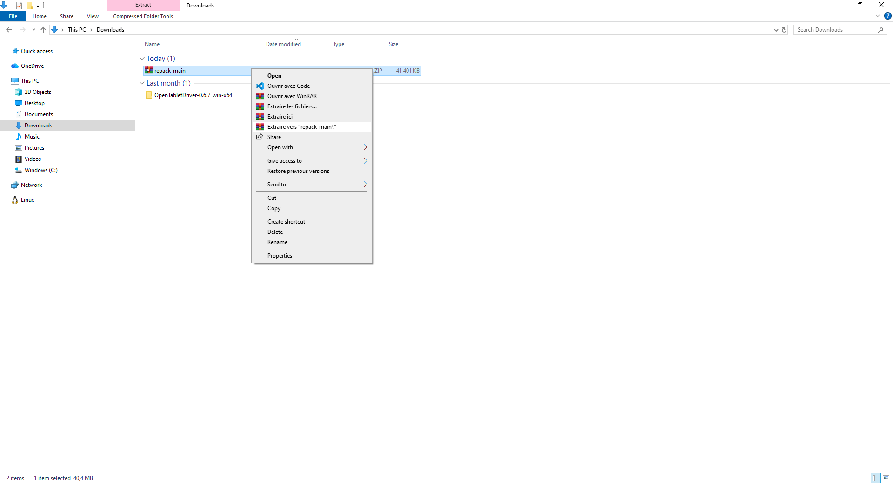
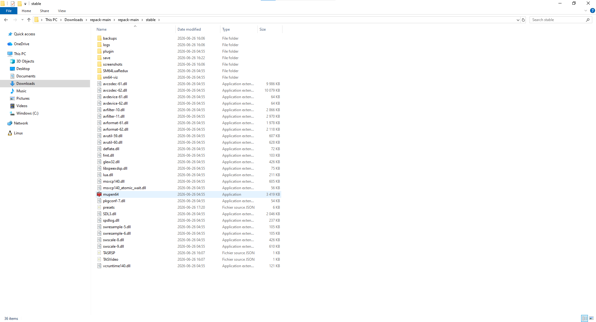
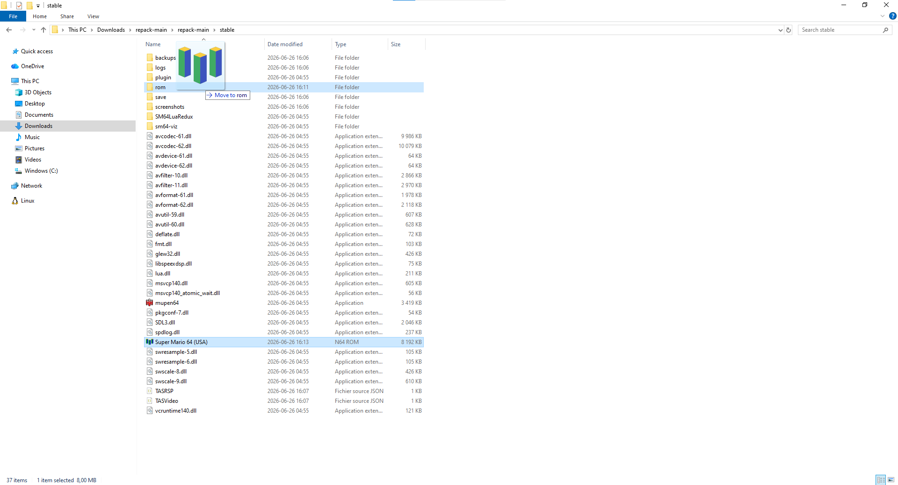
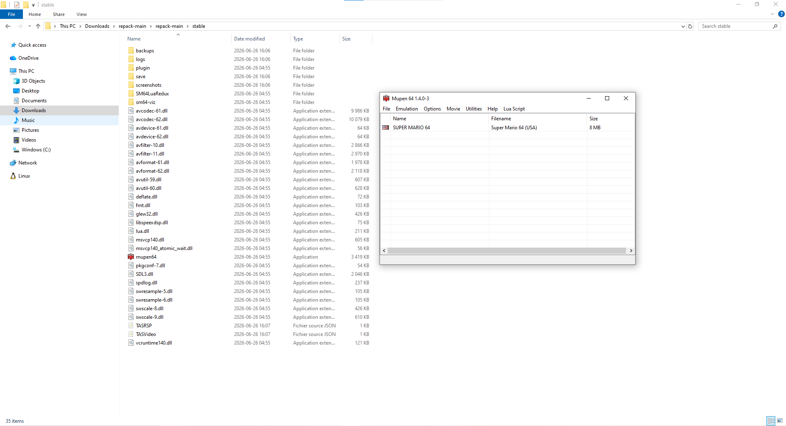
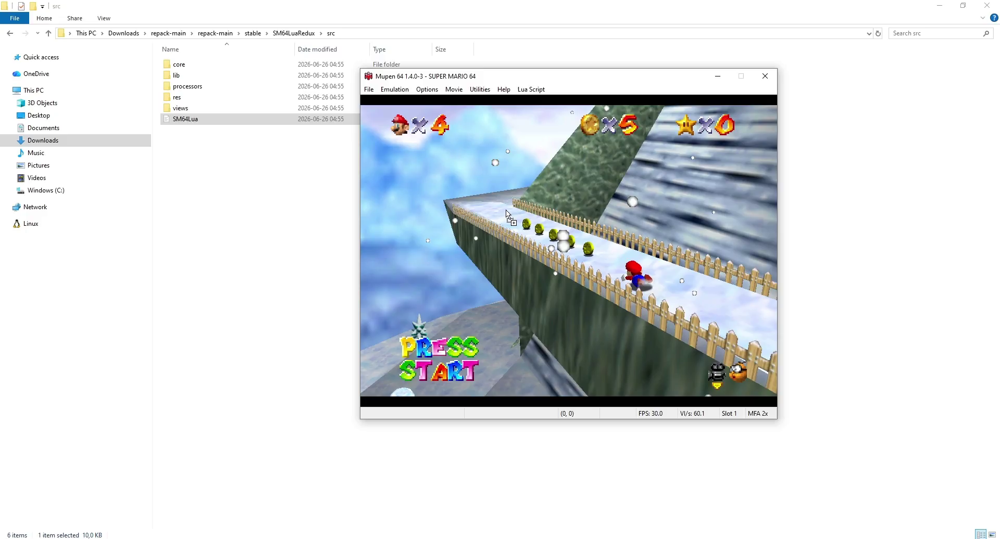
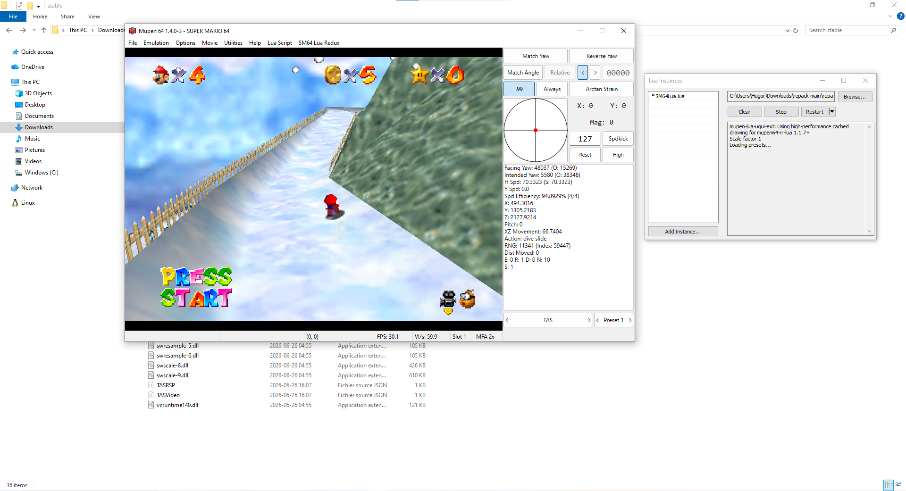

Get up and running with Mupen64 in minutes.
1. Extract
Extract the downloaded ZIP file (repack-stable) to a folder of your choice.

Open the extracted folder and navigate to repack-main/stable. You will see the emulator files including mupen64.exe.

2. Add ROMs
Mupen64 pulls its roms from the rom folder.
Locate the
romfolder in your Mupen64 directory.Drag your
.n64,.z64, or.v64ROM files into theromfolder.Mupen will list every ROM found in that folder once started.

3. Launch
Double-click mupen64.exe to start the emulator.

When it has started, double-click a game to load it. The TAS Input window appears alongside the game.
4. SM64 Lua Redux (Optional)
If you're TASing Super Mario 64, you can use SM64 Lua Redux to visualize data and guide your inputs.
4.1 Add the Script
You can use scripts:
drag and drop SM64Lua.lua directly from the SM64LuaRedux/src folder onto the Mupen64 window.

The overlay now displays live game data on the right side of the game window.

Common Keyboard Shortcuts
| Key | Action |
|---|---|
Ctrl + O |
Load ROM |
Ctrl + S |
Settings |
Ctrl + N |
Show Lua Instances |
F1 - F10 |
Save state to slot 1-10 |
Shift + F1 - F10 |
Load state from slot 1-10 |
You're now ready to use Mupen64's TAS capabilities.
Please note that the Mupen64 ecosystem is geared towards Super Mario 64 and its romhacks - other games might not be emulated accurately.
To learn more, join the Mupen64 Discord Server.